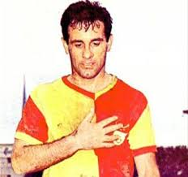
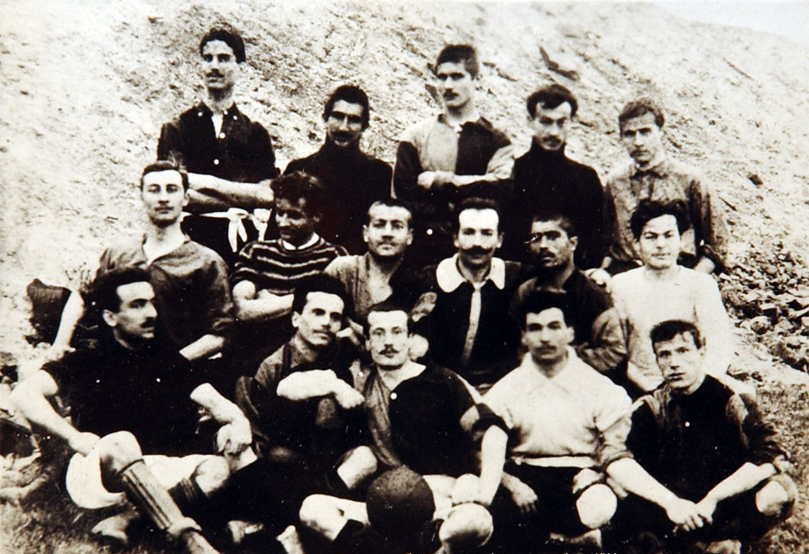
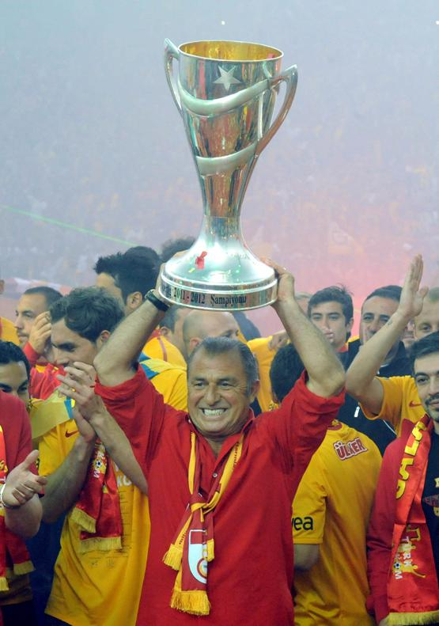
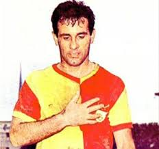
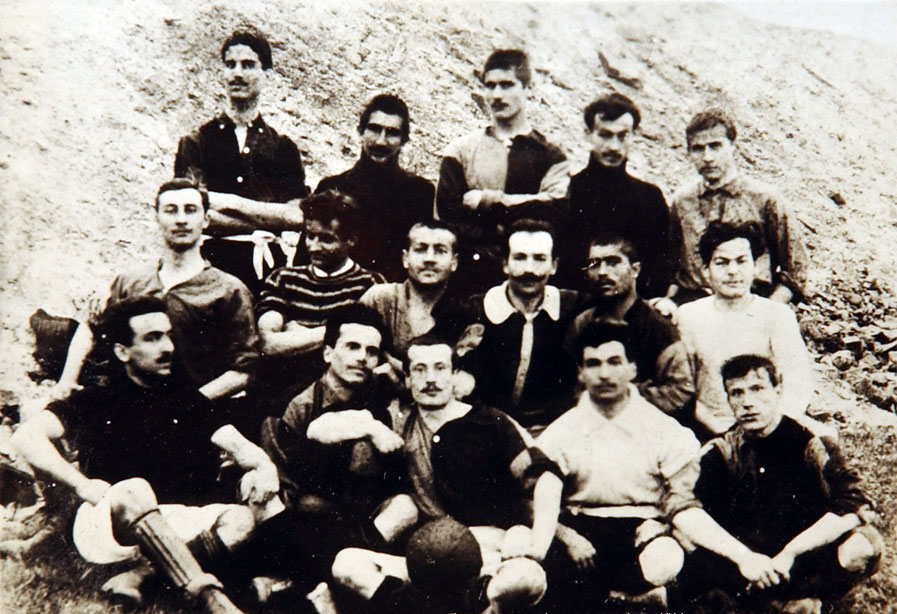
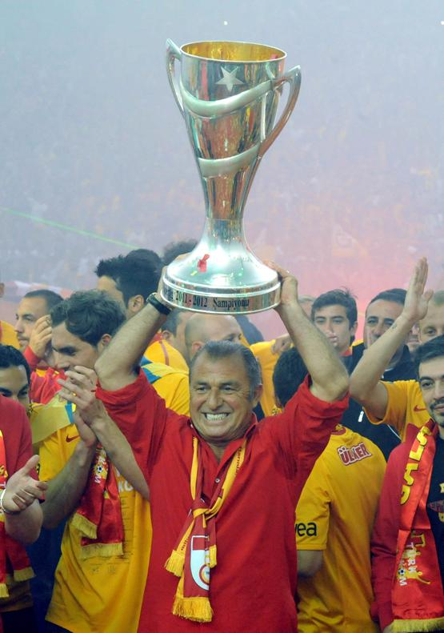

Sen Yoksan Bir Kişi Eksiğiz!
Galatasaray, Türk futbolunun en köklü ve en başarılı kulübüdür.
2024 yılı itibarıyla tarihine yakışır bir şekilde,
yeniden şampiyonluk için tüm gücümüzü ortaya koyuyoruz.
Her zaman olduğu
gibi, bizler için zirve, ulaşılması gereken bir hedeften
çok, doğal bir sonuçtur.
Oyuncu Kadrosu
9
Mauro İcardi
Mevki:Forvet
45
Victor Osimhen
Mevki:Forvet
44
Michy Batshuayi
Mevki:Forvet
53
Barış Alper Yılmaz
Mevki:Forvet
11
Yunus Akgün
Mevki:Forvet
10
Dries Mertens
Mevki:Orta Saha
34
Lucas Torreira
Mevki:Orta Saha
20
Gabriel Sara
Mevki:Orta Saha
18
Berkan Kutlu
Mevki:Orta Saha
7
Roland Sallai
Mevki:Orta Saha
22
Hakim Ziyech
Mevki:Orta Saha
24
Elias Jelert
Mevki:Defans
6
Davinson Sanchez
Mevki:Defans
23
Kaan Ayhan
Mevki:Defans
42
Abdülkerim Bardakçı
Mevki:Defans
1
Fernando Muslera
Mevki:Kaleci
Galatasaray Müzesi
1915 yılında Ali Sami Yen tarafından kurulan ve Türkiye'nin ilk spor müzesi olma özelliğine sahiptir. 6 Aralık 2009'dan itibaren İstanbul'da ziyaretçilerine kapılarını açan müze, Galatasaray Lisesi ve Galatasaray Spor Kulübü'nün tarihini, kazandığı kupaları, formaları ve önemli belgeleri sergileyerek kulübün köklü geçmişini gözler önüne seriyor. Müze, Galatasaray'ın spor dünyasındaki önemli yerini ve Türk sporuna kattığı değeri yansıtan nadir koleksiyonlarıyla büyük bir öneme sahiptir.
Müze Alanı: 2100 metrekare
Tur Süresi: 60dk
Sinema Salonu Kişi Sayısı: 80
Galatasaray’ın tarihine, sergiledikleri performanslar ile adlarını altın harflerle yazdıran “efsaneler”, kulüp ve taraftarlar için ayrı bir yere sahip olmuştur. Hepsinin ayrı bir başarı öyküsü var, ortak özellikleri Galatasaray tarihinde önemli bir yerde olmaları.
-TESİSLER-
Ali Sami Yen Spor Kompleksi RAMS Park
Ali Sami Yen Spor Kompleksi, 2007 yılında inşasına başlanmış ve 2011 yılında tamamlanmıştır. Stadyum, Aslantepe bölgesinde yer almakta olup, 52.000 seyirci kapasitesine sahiptir.
Stadyum, modern mimarisi ve açılır kapanır çatısı ile dikkat çeker. İçerideki çeşitli altyapı imkanları ve geniş kapasitesi, kulübün maçlarına ev sahipliği yapmaktadır.
Florya Metin Oktay Tesisleri
1976 yılında İstanbul'un Florya semtinde kurulmuştur. Adını Galatasaray'ın efsane futbolcusu Metin Oktay'dan almıştır. Tesisler, Galatasaray Futbol Takımı'nın antrenmanlarını yaptığı, altyapı çalışmalarının sürdürüldüğü bir spor kompleksidir.
Tesisler, modern antrenman sahaları, sosyal alanlar ve konaklama birimleriyle donatılmıştır. Hem A takım hem de altyapı takımları burada antrenman yapmaktadır.
Galatasaray Adası
1957 yılında Galatasaray Spor Kulübü tarafından satın alınmıştır. Boğaziçi'nde yer alan ada, 1884 yılında Sarkis Balyan tarafından inşa edilmiştir.
Ada, kulübün üyelerine ve misafirlerine sosyal etkinlikler sunan bir alan olarak kullanılmaktadır.
GS
Store
Ali Koç Galatasaray Forması
The Crying One.
Kadıköy civarındaki mağazalarda satışta.
Nike 2023/2024 100.Yıl Forması
Mauro Icardi Match Day T-Shirt

Puma 2024/2025 İç Saha Parçalı Forma
Puma 2024/2025 Deplasman Forma
Puma 2024/2025 Alternatif Forma
TARİHÇE
 





𓃬Galatasaray Nasıl Kuruldu?
Galatasaray Spor Kulübü, Galatasaray Lisesi'nden doğan ve
Türk sporunun öncüsü olan bir oluşumdur.
1905 yılında, Galatasaray Lisesi'nin öğrencisi Ali Sami Yen
ve arkadaşları, okulda futbol oynamak ve Türk olmayan kulüpleri
yenmek amacıyla bir kulüp kurmaya karar verdiler. İlk adımlarını,
futbolu seven arkadaşlarıyla birlikte attılar ve Galatasaray
ismini benimseyerek kulübü kurdular. Ali Sami Yen,
kulüp başkanı olarak, ilk günlerden itibaren kulübü büyütme
hedefiyle çalıştı. Galatasaraylılık, sadece bir spor kulübünün
aidiyeti değil, bir yaşam tarzı haline geldi. Kulübün
kurucuları, futbolun yanı sıra diğer spor branşlarına da
ilgi göstererek, Türk sporunun temellerini attılar ve
Galatasaray, sadece bir okul kulübü olmanın ötesine geçerek,
Türk spor tarihine altın harflerle kazındı.
𓃬Renklerin Öyküsü
Galatasaray Spor Kulübü'nün renkleri başlangıçta kırmızı-beyaz
olarak seçilmiş, ancak dönemin baskıcı yönetimi nedeniyle bu
renkler değişmiştir.
Ali Sami Yen, sarı ve kırmızı renklerin
Bahçekapı'daki bir kumaş dükkanında tesadüfen buldukları iki
kumaştan ilham aldığını söyler. Renklerin, ateşin içindeki
parlak renk oyunlarını andırdığını düşünerek takımın galibiyete
ulaşacağına inanmışlardır. Diğer kurucu Bekir Sıtkı ise
renklerin, Gül Baba'nın II. Beyazıt'a verdiği sarı ve kırmızı
güllerden esinlendiğini belirtir.
𓃬Neden Aslan?
Galatasaray’ın simgesi olan aslan, kulübün tarihsel bağları
ve sembolizmiyle ilişkilidir. Aslan, güç, cesaret ve liderliği
simgeleyen bir hayvan olarak, Galatasaray'ın karakterini yansıtan
bir sembol seçilmiştir.
Aslanın, aynı zamanda Türk mitolojisinde
ve kültüründe önemli bir yeri vardır ve kulübün kurucuları,
Galatasaray'ı güçlü, yenilmez ve büyük bir kulüp olarak
görmeyi istemiştir. Bu yüzden aslan, hem güç hem de prestij
anlamında Galatasaray'ın simgesi haline gelmiştir.
𓃬Fatih Terim ve Galatasaray
Fatih Terim, Galatasaray’a hem teknik direktör hem de futbolcu
olarak büyük katkılarda bulunmuştur.
1996 yılında teknik
direktörlük görevine başladığında, kulübü başarıya doymayan
bir güce dönüştürmüş ve tarihindeki en parlak dönemlerden
birini yaşatmıştır. 2000 yılında Galatasaray’ı UEFA Kupası'nı
kazanan ilk Türk kulübü yaparak, sadece Türkiye değil, dünya
çapında da büyük bir başarıya imza atmıştır. Terim’in
liderliğinde Galatasaray, Süper Lig'deki üstünlüğünü
pekiştirmiş, birçok yerel ve uluslararası başarı elde
etmiştir. Onun gelişimci bakış açısı ve özverili liderliği,
kulübün modern futbola adım atmasına, Türk futbolunu
dünya arenasında tanıtmasına ve Galatasaray’ı
uluslararası anlamda tanınan bir marka haline
getirmesine olanak sağlamıştır.
Fatih Terim,
Galatasaray’ın tarihine adını altın harflerle
yazdırmış, kulübün değerlerine ve başarı kültürüne
büyük katkılarda bulunmuştur.